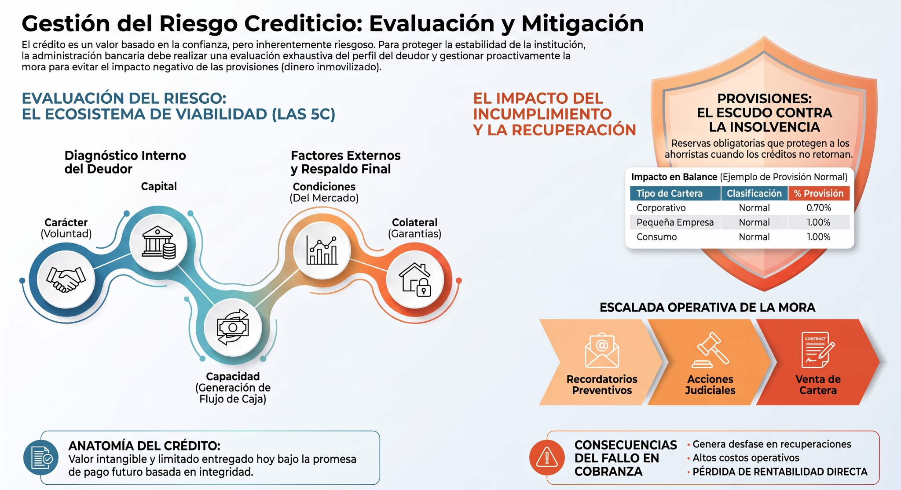

Créditos, evaluación, cobranza y recuperación
De la confianza inicial a la recuperación responsable del valor
Comprende cómo se evalúa una solicitud con las 5C, cómo se transforma el análisis en una decisión y qué ocurre cuando aparecen mora, provisiones y necesidad de recuperación.
Confianza, promesa de pago y riesgo.
Carácter, capital, capacidad, condiciones y colateral.
Seguimiento, mora y recuperación.
Provisiones, segmentación y prioridad.
Dos clientes solicitan exactamente S/ 20,000 y ofrecen garantías similares, pero uno tiene ingresos estables y buen historial mientras el otro muestra ventas variables y atrasos frecuentes. ¿Deberían recibir el mismo crédito y bajo las mismas condiciones?
Cuatro tarjetas para construir el criterio crediticio
Pasa el mouse sobre una tarjeta para verla girar. Haz clic o tócala para abrir el contenido ampliado.
María y Panadería Horizonte
Evalúa el caso paso a paso. Las ayudas visuales y de audio aparecen antes de la decisión para que puedas construir el razonamiento.
solicita S/ 20,000
evidencia y flujo
monto / plazo / riesgo
mora y recuperación
Seis preguntas para verificar comprensión
Las preguntas y alternativas se presentan en orden aleatorio. Si fallas el primer intento, tendrás un segundo. Tras un segundo error se activa la Ruta correcta.
Abre cada material sin salir del programa
PPT, artículo, infografía, videos y audio se visualizan dentro del programa. Los materiales visuales incorporan Leer, Explicar, Pausar, Continuar y Detener.
El crédito se administra antes, durante y después del desembolso
La sesión muestra que prestar no consiste solamente en entregar dinero. La calidad del crédito nace en la evaluación, se sostiene con seguimiento y se protege mediante una recuperación oportuna, proporcional y respetuosa de las reglas.
Las 5C obligan a separar voluntad, capacidad, respaldo y entorno. Una sola señal positiva no sustituye el análisis integral.
Monto, plazo y cuota deben ser compatibles con el flujo real. Evaluar también significa ajustar la estructura para no forzar una operación.
La cobranza forma parte del ciclo desde el inicio. Actuar temprano permite comprender causas y conservar más alternativas de recuperación.
Morosidad, provisiones y segmentación ayudan a medir impacto y a priorizar dónde la institución debe concentrar sus recursos.

Un buen crédito no termina cuando se desembolsa. Empieza con una evaluación que distingue carácter, capacidad, capital, condiciones y colateral; continúa con políticas y seguimiento que detectan señales a tiempo; y se completa cuando el valor retorna sin convertir la cobranza en una reacción tardía. Para administrar cartera con criterio, no basta saber quién está atrasado: hay que entender por qué, cuánto riesgo representa, qué impacto puede generar y qué acción proporcional protege mejor a la institución y al cliente.